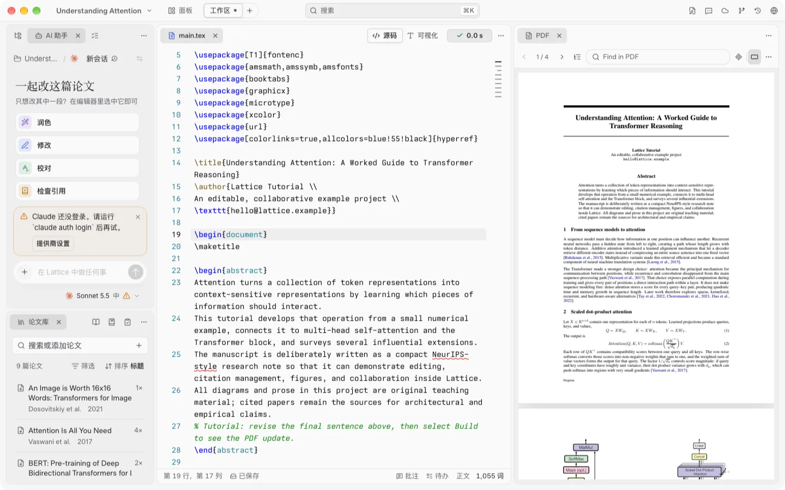

常见问题与排错
出了问题
编译失败，看不出原因。 先看编译问题卡片里的第一个问题，后面的往往是它引起的。打开 日志 看 LaTeX 的原话。然后在命令面板（⌘K）里试试 从头编译，或者按住 ⇧ 点编译按钮。见 编译与排错。
提示缺少 LaTeX 依赖，或找不到某个宏包。 BasicTeX 并不包含 Overleaf 上的全部宏包。点问题里的 安装 按钮，或者使用 设置 › TeX 检查 › 安装所需工具。
编译完全找不到 LaTeX。 打开 设置 › TeX 检查。如果列出缺少的工具，从「上手」清单或 MacTeX 安装 TeX，再重新打开项目。
关掉「隐藏临时文件」才能编译。 有些宏包（例如 minted 2.x）不理会 TeX 的输出目录。Lattice 会自动让这样的文档在原处编译；如果仍然失败，关闭 设置 › 编辑编译 › 隐藏临时文件。见 临时文件。
Typst 文档无法编译。 打开 设置 › 编辑编译 › Typst 支持：如果还没安装，点 下载；如果下载失败，或更新后没跟上，点 重新下载。见 Typst 文档。
添加论文或查找引用不起作用。 这些功能需要小工具 uv。设置 › TeX 检查 会显示 uv 和 uvx 是否存在；安装所需工具 会安装它们。
AI 助手提示未登录。 面板会显示哪个服务商没有登录，例如「Claude is not authenticated」。在「终端」里登录一次（Claude Code 用 claude auth login）再试，或者在 设置 › AI 助手 › 模型 中换一个服务商。

Overleaf 不再同步。 打开 设置 › Overleaf。如果登录过期，点 重新连接；如果同步已暂停，点 继续同步。含有冲突标记的文件会暂停同步，直到你在每个标记处选择 保留我的、保留对方的 或 保留两者。
某个面板不见了。 面板 › 重置布局 会找回所有面板。误删了工作区，马上点通知里的 撤销。
文字丢了。 打开 历史：每次保存、每次助手修改、每次 Overleaf 上的改动都在里面，恢复文件 可以把文件找回来。
遇到其他问题。 帮助 › 报告问题… 会保存一份去除隐私信息的日志，你可以附到 issue 里，并打开 GitHub Issues。设置 › 日志 可以在应用内查看日志，也可以导出。
常见问题
论文存在哪里？ 就在你打开或新建的文件夹里，都是普通文件。Lattice 自己添加的东西（隐藏起来的编译文件、Overleaf 冲突副本等）放在项目里隐藏的 .research 文件夹和它自己的应用数据中，从不写进你的 .tex 文件。
需要 AI 订阅吗？ 只有 AI 助手和校对等工具需要。编译、引用、历史和 Overleaf 同步等其他功能都不需要。见 AI 助手。
合作者需要安装 Lattice 吗？ 不需要。他们照常在 Overleaf 上写；见 Overleaf 同步。
Mac 上还能回到经典版本吗？ 不能。从 0.20.0 起，所有 Mac 都运行原生版本；经典版本的数据仍留在你的 Mac 上，原封不动。见 原生 Lattice。
我用 Windows 或 Linux。 这些版本仍是实验性的，运行的是经典版本，没有 AI 助手。本指南大部分内容同样适用，但有些标签和菜单不一样。
离线能用吗？ 能，只有需要联网的功能除外：Overleaf 同步、使用在线模型的 AI 助手、查找论文、插件和主题市场，以及 Typst 支持、Typst 包等首次下载。